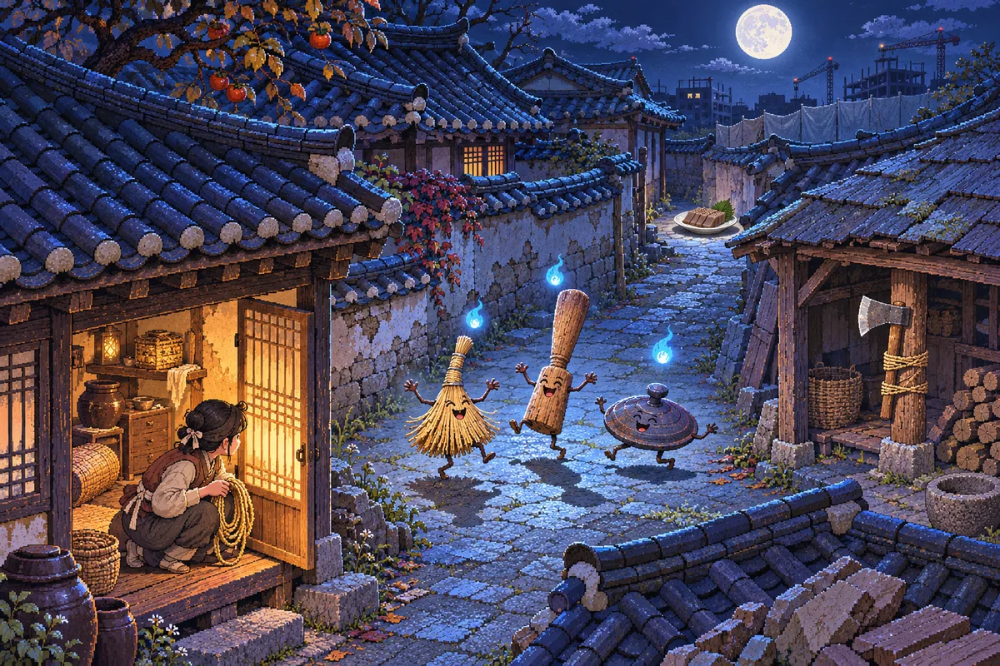

쓰던 물건이 밤마다 도깨비가 된다: 오래된 동네 생존 샌드박스 기획
게임 제목은 정하지 않았다 / 수치는 전부 시제품에서 확인할 가설이다 / 도깨비 이야기의 확인 범위는 마지막 절에 적었다
사람들이 새 동네로 이사한 뒤, 두고 간 물건들이 밤마다 일어난다. 빗자루, 절굿공이, 부지깽이. 사람 손을 오래 탄 물건일수록 먼저 일어난다. 낮에는 그 물건을 주워 쓰고, 밤에는 그 물건과 씨름한다.

틀은 프로젝트 좀보이드로 대표되는 쿼터뷰 생존 샌드박스다. 빈집을 뒤지고, 먹고 자고, 거점을 꾸리고, 끝은 정해져 있지 않다. 이 글은 그 틀에 세계 하나를 얹는다. 무리의 자리에 도깨비를 놓고, 내구도의 자리에 손때를 놓는다. 게임 제목은 정하지 않았다.
좁은 화면에서는 표를 좌우로 밀어 나머지 열을 볼 수 있다.
1. 세계관: 물건이 남은 동네
재개발이 정해진 오래된 동네다. 사람들은 새 아파트로 떠났고, 이삿짐에 싣지 못한 물건이 집집에 남았다. 그 뒤로 해가 지면 손때 묻은 물건이 도깨비가 되어 골목을 돌아다닌다. 주인을 찾는 것인지 같이 놀 사람을 찾는 것인지는 알 수 없다. 플레이어는 아직 떠나지 않은 한 사람이다. 떠나지 않은 이유는 직업마다 다르고, 길게 설명하지 않는다.
규칙 셋
- 손때 묻은 물건은 해가 지면 도깨비가 된다. 해가 뜨면 서 있던 자리에서 도로 물건이 된다.
- 도깨비는 사람을 해치지 않고 놀자고 한다. 씨름을 걸고, 물건을 들고 가고, 길을 헷갈리게 한다. 놀이에 지면 무언가를 잃는다.
- 도깨비는 잘 잊고 잘 속는다. 약속은 지키는데, 지켰다는 것을 잊는다.
옛이야기에서 가져온 것
도깨비 이야기에는 게임 규칙으로 바로 옮길 수 있는 대목이 많다. 무엇을 어디에 썼는지 적는다.
| 이야기의 대목 | 게임에서 |
|---|---|
| 사람 손때가 묻은 물건이 도깨비가 된다 | 규칙 1. 물건마다 손때 수치가 있고, 높을수록 자주 일어난다. |
| 밤길에 씨름을 걸어온다 | 근접전의 자리에 씨름을 둔다. 잡고, 버티고, 넘긴다. |
| 넘어뜨려 나무에 묶어 두었더니 아침에 헌 빗자루였다 | 묶기. 묶인 도깨비는 아침에 그 자리에서 물건이 된다. |
| 밤새 홀려서 같은 곳을 맴돌았다 | 홀림. 지도의 끝을 설명하고, 캐릭터가 끝나는 방식이 된다. |
| 메밀묵과 술을 좋아한다 | 미끼. 놓아둔 곳으로 도깨비가 모인다. |
| 꾼 돈을 갚고, 갚은 것을 잊고 또 갚으러 온다 | 빚. 물건을 꿔 주면 밤마다 갚으러 온다. |
| 하룻밤에 다리를 놓고 둑을 쌓는다 | 밤일. 길들인 도깨비가 밤사이 담을 쌓는다. |
| 방망이와 감투 | 동네에 하나씩만 있는 물건. 만들 수 없고 놀이에서 이겨야 얻는다. |
왜 오래된 동네인가
물건에 나이가 있어야 하기 때문이다. 새 아파트의 플라스틱 바가지는 일어나지 않는다. 오래된 집의 무쇠솥은 일어난다. 그래서 이 동네에서는 좋은 물건과 위험한 물건이 같다. 수십 년 쓴 도끼는 날이 좋고 손에 잘 맞는데, 바로 그 도끼가 밤에 광 문을 안에서 연다.
2. 설계 기둥 네 가지
- ① 좋은 것이 일어난다연장은 쓸수록 손에 익어 좋아진다. 손에 익을수록 밤에 일어날 가능성도 커진다. 가장 아끼는 연장이 가장 큰 걱정거리다.
- ② 밤에는 못 자고 낮에는 바쁘다밤은 시끄러워서 깊이 잘 수 없다. 낮은 뒤지고 고치고 준비할 유일한 시간이다. 그 낮의 일부를 잠에 써야 한다.
- ③ 져도 끝이 아니다도깨비에게 지면 물건이나 잠이나 정신을 조금 잃는다. 한 번의 실수로 끝나지 않는다. 잃은 것이 쌓여서 끝난다.
- ④ 힘보다 꾀도깨비는 사람보다 세다. 대신 잘 속고 잘 잊는다. 이기는 방법은 대개 싸움이 아니라 미끼와 약속과 매듭이다.
3. 손때: 내구도의 자리에 놓는 것
모든 물건에 손때 수치가 0부터 100까지 있다. 쓰면 오른다. 생존 게임의 내구도는 쓸수록 줄어서 물건을 버리게 만든다. 손때는 쓸수록 늘어서 물건을 고민하게 만든다.
| 단계 | 손때 | 쓸 때 | 밤에 |
|---|---|---|---|
| 새것 | 0~19 | 손에 설다. 동작이 10% 느리다. | 일어나지 않는다. |
| 길든 것 | 20~49 | 기본. | 보름 무렵에만 일어난다. |
| 손에 익은 것 | 50~79 | 10% 빠르고 덜 지친다. | 사흘에 한 번꼴로 일어난다. |
| 정든 것 | 80~100 | 20% 빠르고 잘 망가지지 않는다. | 매일 밤 일어난다. 주인을 알아보고 찾아온다. |
동네에 남은 물건은 처음부터 손때가 있다. 오래된 집의 물건일수록 높다. 낮에 집을 뒤질 때 손잡이의 윤으로 대강 보인다. 반질반질한 호미는 좋은 호미이고, 오늘 밤 일어날 호미다.
손때를 다루는 다섯 가지
- 돌려 쓰기. 같은 연장을 여러 개 두고 번갈아 쓴다. 어느 것도 정들지 않는다. 대신 어느 것도 빨라지지 않는다.
- 묶기. 해 지기 전에 새끼줄로 기둥에 묶는다. 일어나도 움직이지 못한다. 줄은 밤마다 닳는다.
- 내놓기. 집에서 먼 곳에 두고 잔다. 안전하지만 아침에 찾으러 가야 하고, 그 자리에 없을 수도 있다.
- 씻기. 잿물로 문질러 손때를 뺀다. 수치가 내려가는 만큼 손에 설어진다.
- 태우기. 영영 없앤다. 그 물건에서 나오던 도깨비도 함께 사라진다.
매일 저녁의 질문은 하나다. 가장 아끼는 연장을 오늘 밤 어디에 둘 것인가. 묶을 줄이 모자라면 무엇을 묶고 무엇을 내놓을지 골라야 한다.
4. 하루의 흐름: 낮에 줍고, 밤에 논다
하루는 현실 시간 40분으로 잡는다. 낮과 밤의 일이 완전히 다르다.
- 새벽도깨비가 서 있던 자리에서 물건이 된다. 골목을 돌며 줍는다.
- 오전빈집을 뒤진다. 손때를 보고 가져갈 것과 둘 것을 고른다.
- 한낮잔다. 네댓 시간은 자야 밤을 버틴다.
- 저녁묶고, 내놓고, 문을 걸고, 메밀묵을 쑨다.
- 밤도깨비가 일어난다. 숨거나, 꾀거나, 나가서 겨룬다.
- 깊은 밤모인 도깨비끼리 판을 벌인다. 판이 클수록 시끄럽다.
새벽 줍기
도깨비는 해가 뜰 때 서 있던 자리에서 물건으로 돌아간다. 그래서 밤에 어디로 꾀었는지가 아침에 무엇을 줍는지를 정한다. 솥뚜껑 도깨비를 메밀묵으로 내 마당까지 데려오면 아침에 마당에 솥뚜껑이 놓여 있다. 무거워서 낮에는 옮길 엄두가 안 나던 물건을 밤에 제 발로 걸어오게 할 수 있다. 밤의 위험과 낮의 수확이 한 줄로 이어진다.
. . . . . . . . . . . . . . . . . # # # # # . . # # # # # . . . # T ~ # . . # # . . . # # . d . # @ # . . . # # + # # . . # # + # # . . . . . . . . d . . . . . . . . . . . . . . . . . . d . . . . m .
- 불을 끄고 숨을 죽인다. 지나갈 수도 있고, 문을 두드릴 수도 있다.
- 창으로 메밀묵 쪽에 돌을 던져 소리를 낸다. 셋 다 그리로 간다. 묵은 한 번에 다 먹힌다.
- 광으로 가서 줄을 다시 죈다. 골목을 건너야 한다.
- 나가서 하나와 씨름한다. 이기면 묶어 두고 아침에 물건을 얻는다. 지면 새벽까지 붙들린다.
5. 도깨비: 끌리는 것과 종류
도깨비는 세 가지에 끌린다. 사람의 기척, 좋아하는 것, 제 주인이다. 불빛과 소리가 기척이다. 밤에 불을 켠 집에는 도깨비가 문을 두드린다. 좋아하는 것은 메밀묵과 막걸리와 노랫소리다. 정든 물건에서 나온 도깨비는 주인이 어디에 있든 그쪽으로 걷는다.
종류는 원래 물건이 정한다. 생김새에 물건의 모양이 남아 있어서 멀리서도 무엇인지 보인다.
| 원래 물건 | 하는 짓 | 다루는 법 |
|---|---|---|
| 빗자루 | 가볍고 빠르다. 바닥에 둔 물건을 쓸어 간다. 가장 흔하다. | 씨름이 약하다. 물건을 바닥에 두지 않는다. |
| 부지깽이 | 불을 좋아한다. 아궁이와 난로를 들쑤셔 불씨를 흩는다. | 자기 전에 불을 끄거나, 불 하나를 일부러 밖에 피워 둔다. |
| 절굿공이 | 무겁고 느리다. 문과 담을 찧는다. 그 소리에 다른 도깨비가 모인다. | 먼저 꾀어낸다. 문을 부술 수 있는 것은 이놈뿐이다. |
| 솥뚜껑 | 앞을 막는다. 밀어도 넘어가지 않는다. | 돌아간다. 아침에 얻으면 쓸모가 많다. |
| 키 | 곡식을 까불러 날린다. 식량 창고를 노린다. | 곡식은 독에 담고 뚜껑을 덮는다. |
| 지게 | 물건을 지고 간다. 지친 사람도 지고 간다. | 따라가지 않는다. 홀림이 깊을 때 가장 위험하다. |
| 내가 쓰던 연장 | 내 기술을 쓴다. 도끼는 문을 패고 삽은 담 밑을 판다. 집의 구조를 안다. | 묶거나 내놓는다. 잊지 않는 유일한 도깨비다. |
놀이 네 가지
- 씨름. 이기면 묶을 수 있다. 지면 새벽까지 붙들려 잠을 못 잔다.
- 숨바꼭질. 집 안으로 들어온 도깨비가 사람을 찾는다. 들키면 가진 것 하나를 가져간다.
- 길 홀리기. 도깨비불이 길처럼 보인다. 따라가면 아침에 엉뚱한 곳에서 깬다.
- 잔치. 보름밤에 벌어진다. 끼면 선물을 받고, 그만큼 홀린다.
6. 다루는 법: 씨름, 묶기, 꾀기, 속이기
씨름
근접전의 자리다. 잡고, 버티고, 넘긴다. 버티는 동안 양쪽의 기운이 깎이고, 먼저 바닥난 쪽이 넘어간다. 도깨비는 사람보다 기운이 많다. 그래서 정면으로 버티면 진다. 도깨비마다 약한 다리가 있고, 그쪽을 걸면 한 번에 넘어간다. 어느 쪽이 약한지는 몇 번 겨뤄 봐야 보인다. 한 번 알아낸 것은 기록에 남는다.
묶기
넘어진 도깨비는 잠깐 누워 있다. 그때 새끼줄이나 칡덩굴로 기둥이나 나무에 묶는다. 아침에 가 보면 물건이 묶여 있다. 줄은 가장 흔하게 쓰는 소모품이다. 짚을 구해 낮에 꼬아 둔다.
꾀기
메밀묵, 막걸리, 노랫소리. 놓아둔 곳으로 모인다. 라디오를 틀어 빈집에 두면 그 집이 밤새 판이 된다. 전기가 끊기면 건전지가 그 일을 한다.
속이기
도깨비는 어제 속은 것을 오늘 잊는다. 같은 수가 매일 통한다. 통하지 않는 것은 내가 쓰던 연장에서 나온 도깨비다. 이놈은 기억한다. 속임수를 한 번 쓰면 다음에는 다른 수가 필요하다.
때리면 어떻게 되나
때릴 수 있다. 맞은 도깨비는 물러난다. 대신 아침에 그 물건이 금 가거나 부러져 있다. 그리고 그 밤의 다른 도깨비들이 거칠어진다. 때리는 것은 손해 보는 선택으로 남겨 둔다.
7. 몸과 홀림
배고픔, 목마름, 잠, 지침, 다침이 있다. 다치는 것은 대개 넘어지거나 삐는 일이다. 여기에 홀림이 하나 더 있다. 이 게임에는 죽음이 없고, 캐릭터가 끝나는 길은 홀림 하나다.
| 단계 | 수치 | 일어나는 일 |
|---|---|---|
| 멀쩡함 | 0~29 | 없다. |
| 솔깃함 | 30~59 | 도깨비불이 길처럼 보이기 시작한다. 밤의 소리가 노랫소리로 들린다. |
| 홀림 | 60~99 | 지도가 가끔 틀린다. 밤에 서 있으면 발이 판 쪽으로 움직인다. |
| 넘어감 | 100 | 판에 끼어 함께 떠난다. 그 캐릭터는 끝난다. |
홀림을 올리는 것은 잠 부족, 놀이에서 진 것, 잔치 음식, 오래 혼자 지낸 것이다. 그중 잠 부족이 가장 크다. 내리는 것은 낮잠, 따뜻한 밥, 사람의 물건이다. 사진첩을 넘기거나 라디오에서 사람 목소리를 들으면 내려간다. 굶거나 크게 다쳐 쓰러지면 죽지 않고 도깨비에게 업혀 가 아침에 동네 어귀에서 깬다. 그때 홀림이 크게 오른다. 어떤 실패든 홀림으로 모인다.
동네 밖으로 나가는 길도 홀림으로 막는다. 동네를 벗어나면 화면이 흐려지고, 걷다 보면 제자리로 돌아와 있다.
8. 캐릭터: 아직 떠나지 않은 이유
직업은 이 동네에 남은 사정이다. 능력치보다 손때와 밤을 다르게 겪게 하는 쪽으로 나눈다.
| 직업 | 잘하는 것 | 대가 |
|---|---|---|
| 고물상 주인 | 손때를 숫자로 본다. 물건값을 안다. | 가게에 정든 물건이 가득한 채로 시작한다. |
| 목수 | 짓고 고치는 일이 빠르다. | 연장이 남보다 빨리 손에 익는다. |
| 씨름부 코치 | 약한 다리를 한 번에 알아본다. | 도깨비가 먼저 씨름을 걸어온다. |
| 메밀국숫집 주인 | 메밀묵을 빨리, 많이 쑨다. | 가게 냄새를 맡고 첫날 밤부터 모인다. |
| 이삿짐 일꾼 | 많이 든다. 매듭이 잘 풀리지 않는다. | 허리가 약하다. 다치면 오래간다. |
| 전파사 주인 | 라디오와 건전지를 고친다. | 소리 나는 물건이 많아 밤이 시끄럽다. |
| 통장 | 어느 집에 무엇이 있는지 안다. 지도에 표시된다. | 느리다. 씨름이 약하다. |
| 야간 경비원 | 밤눈이 밝다. 낮잠을 짧게 자도 된다. | 혼자 지낸 시간이 길어 홀림이 빨리 오른다. |
특성은 점수를 주고받는 방식으로 고른다. 예를 들면 이렇다. 잠귀가 밝음, 잠귀가 어두움, 노래를 잘함, 손이 거침(손때가 빨리 오른다), 물건을 아낌(태우지 못한다), 겁이 없음, 길눈이 밝음(홀려도 지도가 틀리지 않는다).
9. 시간표: 달과 철거 일정
달
달은 14일에 한 번 찬다. 그믐에는 일어나는 도깨비가 적고 조용하다. 대신 어두워서 도깨비불이 유난히 잘 보이고, 홀리기 쉽다. 보름에는 길든 것까지 전부 일어나 잔치를 벌인다. 한 달에 두 번, 준비한 만큼 버티는 밤이 온다.
하나씩 끊기는 것
- 5~10일째, 가게가 문을 닫는다. 마지막 가게가 떠난다. 그 뒤로는 빈집에 남은 것이 전부다.
- 10~20일째, 전기가 끊긴다. 가로등이 꺼진다. 내 집의 불빛이 동네에서 유일한 불빛이 된다.
- 20~30일째, 수도가 끊긴다. 물을 길어야 한다. 잿물로 씻는 일이 귀해진다.
- 장마. 새끼줄이 썩는다. 묶어 둔 것이 풀린다.
- 겨울. 밤이 길어진다. 도깨비의 시간이 늘고 낮잠 잘 시간이 준다.
밤은 점점 붐빈다
내가 물건을 쓰는 만큼 동네의 손때가 늘어난다. 오래 살수록 일어나는 물건이 많아진다. 난이도를 올리는 것은 날짜가 아니라 내 살림이다. 살림을 줄이면 밤이 조용해지고, 늘리면 붐빈다.
10. 다회차 장치 열 가지
세 층으로 나눈다. 한 캐릭터 안에서 매일을 다르게 만드는 것, 한 동네 안에서 캐릭터를 넘어 쌓이는 것, 새 동네를 시작할 때 달라지는 것이다.
| 층 | 장치 | 무엇이 달라지나 |
|---|---|---|
| 한 캐릭터 | ① 손때 | 무엇을 아끼느냐에 따라 밤에 찾아오는 도깨비가 달라진다. 같은 동네라도 목수의 밤과 국숫집 주인의 밤이 다르다. |
| ② 달 | 14일 주기로 조용한 밤과 붐비는 밤이 오간다. 보름을 어떻게 넘겼는지가 매번 이야기가 된다. | |
| ③ 새벽 줍기 | 밤에 꾄 방향이 아침의 수확을 정한다. 원하는 물건을 얻으려고 일부러 위험한 밤을 고르게 된다. | |
| ④ 빚과 내기 | 물건을 꿔 주면 밤마다 갚으러 온다. 갚은 것을 잊으니 매일 온다. 꾸준한 벌이이자 매일 밤 문 앞에 오는 손님이다. | |
| 한 동네 | ⑤ 길들인 도깨비 | 여러 번 놀아 주고 약속을 지키면 따른다. 밤사이 담을 쌓고 짐을 옮긴다. 주민의 자리를 채운다. |
| ⑥ 방망이와 감투 | 동네에 하나씩만 있다. 가진 도깨비를 찾아 놀이에서 이겨야 한다. 방망이는 물건 하나를 늘리고, 감투는 하룻밤 보이지 않게 한다. 둘 다 닳는다. | |
| ⑦ 이어 살기 | 캐릭터가 넘어가도 동네는 남는다. 다음 사람이 같은 동네에 들어온다. 앞사람이 정들인 연장은 그 사람의 기술을 가진 도깨비가 되어 돌아다닌다. | |
| 새 동네 | ⑧ 동네 만들기 | 집마다 지은 해와 살던 사람의 일이 정해진다. 그것이 물건과 손때를 정한다. 대장간 골목, 시장통, 기와집 골목의 밤이 서로 다르다. |
| ⑨ 시작 사정 | 이삿날 아침, 보름밤, 장마철, 전기가 끊긴 뒤. 첫 사흘의 과제가 달라진다. | |
| ⑩ 설정판 | 손때가 오르는 속도, 달의 길이, 도깨비 성격의 비율, 철거 날짜를 둘지 말지. |
이어 살기를 조금 더
앞사람이 도끼를 아꼈다면, 다음 사람의 밤에는 문을 패는 도깨비가 있다. 그 도깨비는 앞사람이 살던 집을 알고, 앞사람이 쓰던 수를 기억한다. 내가 잘 살았던 흔적이 다음 판의 어려움이 된다. 그 도깨비를 길들이면 앞사람의 기술 하나를 배울 수 있다. 앞사람이 길들였던 도깨비들은 새 사람을 낯설어하고, 다시 사귀어야 한다.
해금의 원칙
판을 거듭해도 캐릭터가 강해지지 않는다. 남는 것은 기록이다. 만난 도깨비의 종류, 알아낸 약한 다리, 통했던 속임수가 적힌다. 늘어나는 것은 선택지다. 새 직업, 새 시작 사정, 새 동네 모양이 열린다.
11. 화면과 그래픽
- 시점. 쿼터뷰 타일. 벽 뒤는 지붕이 걷혀 보이고, 보지 못한 방은 어둡게 둔다.
- 낮. 바랜 색의 골목. 손때 높은 물건은 햇빛에 윤이 난다. 뒤질 때 눈이 먼저 그리로 간다.
- 밤. 짙은 남색에 푸른 도깨비불과 노란 창문. 불을 켠 집은 멀리서도 보인다.
- 도깨비. 물건의 모양이 남는다. 빗자루에 팔다리가 달린 정도다. 무섭게 그리지 않는다. 장난스럽고 조금 서운해 보이게 그린다.
- 표시. 달의 모양, 해가 지기까지 남은 시간, 홀림. 물건에 커서를 올리면 손때 단계가 보인다.
- 소리. 밤에는 소리가 정보다. 덜컹거리면 묶인 것이 일어난 것이고, 쿵쿵거리면 절굿공이가 온 것이다.
12. 범위, 검증 순서, 남은 결정
만드는 순서
- 집 여섯 채와 골목 하나. 손때와 낮밤 전환만 넣는다. 저녁에 연장을 어디 둘지 고민하게 되는지 본다.
- 씨름과 묶기, 새벽 줍기. 밤에 일부러 나가게 되는지 본다.
- 홀림과 잠. 낮잠을 자는 것이 아깝게 느껴지는지 본다.
- 달과 보름 잔치. 14일을 한 단위로 계획하게 되는지 본다.
- 이어 살기. 앞사람의 연장을 만났을 때 반가운지 본다.
확인할 가설
- 좋은 연장을 쓰기 겁나는 마음이 재미로 느껴진다. 짜증으로 느껴지면 손때의 이득을 키운다.
- 죽지 않아도 긴장이 선다. 홀림 하나로 끝이 무겁게 느껴져야 한다.
- 밤에 숨어만 있는 것이 최선이 되지 않는다. 새벽 줍기와 빚이 그 일을 해야 한다.
- 도깨비가 귀찮기만 한 존재가 되지 않는다. 길들이기 전에도 정이 가야 한다.
넣지 않는 것
- 총과 폭발물
- 사람끼리의 싸움
- 판을 넘겨 쌓이는 능력치
- 동네 밖의 지역
- 도깨비 말고 다른 귀신
- 왜 일어나는지에 대한 긴 설명
남은 결정
- 게임 제목.
- 철거 날짜를 기본으로 둘지. 두면 끝이 있는 게임이 되고, 빼면 끝없는 샌드박스가 된다.
- 넘어간 앞사람을 다시 데려올 수 있게 할지.
- 길들인 도깨비에게 일을 시키는 범위.
- 여럿이 같이 하는 판에서 손때를 사람마다 따로 셀지.
13. 도깨비 이야기의 확인 범위
이 글의 도깨비는 조사 결과가 아니라 게임 규칙이다. 그래도 어디까지 확인했는지는 적어 둔다. 2026-11-18에 검색으로 찾은 글에서 확인한 것은 세 가지다. 손때 묻은 물건이 도깨비가 되기도 한다는 것, 씨름을 걸어온 도깨비를 넘어뜨려 묶어 두었더니 아침에 헌 빗자루였다는 것, 이야기에 나오는 물건이 방망이·부지깽이·빗자루·절굿공이·체·키·홍두깨·솥 같은 살림살이라는 것이다.
- 서울신문, 1994-06-15 — 손때 묻은 물건과 도깨비, 씨름 뒤 아침에 본 빗자루. 검색 요약으로 확인했다.
- 대한민국 정책브리핑 — 칡덩굴로 묶어 둔 빗자루, 부지깽이 이야기, 도깨비와 얽히는 살림살이 목록. 검색 요약으로 확인했다.
- Gwangju News — 도깨비가 씨름을 좋아한다는 설명. 검색 요약으로 확인했다.
확인하지 못한 것도 있다. 메밀묵과 술을 좋아한다는 것, 약한 다리가 있다는 것, 꾼 돈을 날마다 갚는다는 것, 하룻밤에 다리와 둑을 놓는다는 것은 널리 알려진 이야기로 기억해서 적었고, 이번에 출처를 대조하지 못했다. 사전과 구비문학 자료의 원문도 읽지 못했다. 게임에서는 규칙으로만 쓴다.